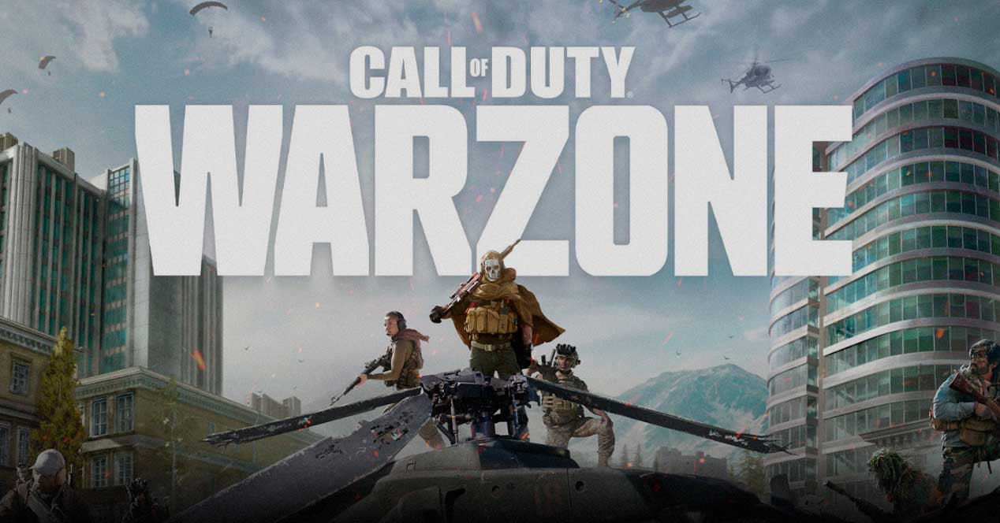

Call of Duty: Warzone es un videojuego gratuito Battle Royale lanzado el 10 de marzo de 2020 para Xbox One, PlayStation 4 y Microsoft Windows como parte de la franquicia de Call of Duty. Warzone fue desarrollado por Infinity Ward y Raven Software y publicada por Activision. Este juego fue principalmente sacado para realizar una competencia en contra del también conocido videojuego Fortnite.
El equipamiento es una de las claves para llegar lejos en cualquier partida. Aterrizar bien y lograr buen loot son claves para enfrentarte con garantías a tus numerosos enemigos. Mientras más juegues y mates, más nivel tendrás y podrás desbloquear mejores armas para poder tener el mejor equipamiento posible.
Caer en el sitio más adecuado y con mayor potencial de obtener equipamiento de calidad es algo importante en cualquier Battle Royale que se precie. Debes tener en cuenta el loot de cada sitio y la zona en la que hayan una cantidad de jugadores aceptable para matar y conseguir armas de la manera más óptima posible.
El dinero es un elemento fundamental de las mecánicas planteadas en Call of Duty Warzone. Con él, puedes comprar diversas ventajas en las tiendas y si juegas en equipos, puedes revivir a los compañeros caidos pagando en las mismas tiendas distribuidas por el mapa.
Las clases son algo fundamental en Call of Duty y en este Battle Royale no es lo de menos. Tener creada una buena clase puede ser lo mejor que debes hacer para cuando compres tu caja de suministros en la tienda puedas obtener esa clase y asesinar a los jugadores en la partida.
El Gulag es una de las mecánicas diferenciadores de Call of Duty Warzone respecto a sus rivales. La muerte no es el final. Se trata de una pelea 1vs1 contra los jugadores que también hayan caido en partida. Si ganas, tienes una segunda oportunidad, pero si pierdes tendrás que buscar una nueva partida.